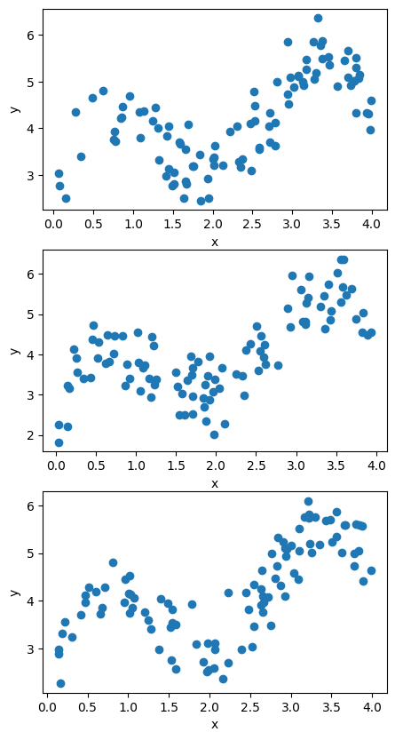

import numpy as np
import matplotlib.pyplot as plt
from matplotlib.lines import Line2D
from sklearn.linear_model import LinearRegression
from sklearn.neighbors import KNeighborsRegressor
import scipy.interpolate as inter
n = 1000Введение
Компромисс дисперсии и смещения
В этом notebook я надеюсь подробно разобрать вопрос компромиса между смещением (bias) и дисперсией (variance) в машинном обучении.
Вдохновлено соотсветсвующим разделом в ISLR.
Утверждается что средне квадратическую ошибку модели (Mean Square Error, MSE) можно разложить на три составляющие: - Дисперсию; - Квардрат смещения; - Неустранимую ошибку.
Или записывая серез формулу:
\[\mathbb{E}(y_0 - \hat{f}(x_0))^2 = Var(\hat{f}(x_0)) + [Bias(\hat{f}(x_0))]^2 + Var(\varepsilon). \tag{1}\]
Где: - \(\hat{f}(x)\) - некоторая модель описывающая данные; - \(x_0\) - некоторое произвольное контрольное значение предикторов; - \(y_0\) - некоторое произвольное контрольное значение оклика; - \(\varepsilon\) - неустранимая ошибка модели (irreducible error); в нее вкладывается та информация о описываемом процессе, которой нет в полученной выборке; - \(Var(\hat{f}(x_0))\) - дисперсия полученной модели; эта величина должна быть тем больше, чем сильнее предстказания модели будут меняться от измениния выбоки; - \(Bias(\hat{f}(x_0))\) - смещение модели эта величина тем меньше, чем точнее модель подогнанна к описываемому просцессу; - \(Var(\varepsilon)\) - дисперсия неустранимой ошибки; чем полнее и точнее наши данные, тем меньше эта величина; - \(\mathbb{E}(y_0 - \hat{f}(x_0))^2\) - математическое ожидание ошибки полученной модели.
В различных источниках к этой теме очень часто прикладывают график подобный этому:
x_plot_range = np.arange(0,0.8, 0.05)
variance = 3*(x_plot_range)**2 + x_plot_range
bias = 3*(x_plot_range)**2 - 4.8*x_plot_range + 2
irrecible_error = 1
model_error = variance + bias + irrecible_error
plt.figure(figsize = [10, 6])
plt.plot(x_plot_range, variance)
plt.plot(x_plot_range, bias)
plt.axhline(irrecible_error, color = "gray", linestyle = "dashed")
plt.plot(x_plot_range, model_error)
plt.xticks([])
plt.yticks([])
plt.xlabel("Сложность модели", fontsize = 15)
plt.ylabel("Ошибка", fontsize = 15)
ans = plt.legend([
"$Var(\hat{f}(x_0))$",
"$Bias(\hat{f}(x_0))$",
"$Var(\\varepsilon)$",
"$\mathbb{E}(y_0 - \hat{f}(x_0))^2$"
])
Далее я на примере простой задачи регрессии попытаюсь провести такой вычислитеньный эксперимент, который приведет именно к такому графику.
Идея эксперимента
Пусть имеется некоторе уравнение которое обисывает некоторых достаточно сложный полином. В следующей ячейке происходит его генерация.
x_p = np.array([0, 1, 2, 3, 4])
y_p = np.array([2, 4, 3, 5, 4])
poly = inter.lagrange(x_p, y_p)Итак, полученный полином записывается в форме:
\[f(x)=-0.0002+0.0105x^{1}-0.2263x^{2}+2.7223x^{3}-20.1388x^{4}+94.3996x^{5}-278.1615x^{6}+491.6866x^{7}-466.4732x^{8}+178.181x^{9}+2.0x^{10}\]
def f(x):
X = np.concatenate(
[(x**a)[:, np.newaxis] for a in range(len(poly.coef))],
axis = 1
)
return np.dot(X, poly.coef[::-1][:, np.newaxis]).ravel()
x_range = np.arange(0, 4.01, 0.01)
ans = plt.plot(x_range, f(x_range))Пусть зачение объясняемой переменной объясняется так:
\(y = f(x) + \varepsilon\)
Пусть для нашего примера \(\varepsilon \sim N(0, 0.5)\). То есть, по определениею нормального распределения \(Var(\varepsilon) = 0.5^2=0.25\). Таким образом мы можем сгенерировать множество выборок подобных \((x_i,y_i), i \in \overline{1,n}\). Некторые из них предствлены на рисунке:
y = lambda x: f(x) + np.random.normal(0, 0.5, x.shape)np.random.seed(20)
sample_size = 100
examples_count = 3
X_samples = np.random.uniform(0, 4, [sample_size, examples_count])
Y_samples = np.concatenate(
[
y(X_samples[:, col_i])[:, np.newaxis] for col_i in range(examples_count)
],
axis = 1
)
plt.figure(figsize = [5, 10])
for i in range(examples_count):
plt.subplot(examples_count, 1, i+1)
plt.scatter(
X_samples[:, i], Y_samples[:,i]
)
plt.xlabel("x");ans = plt.ylabel("y")
Обычно об \(f(x)\) нам ничего, кроме выборки неизвестно. Потому задачу по формированию модели можно поставить следующим образом - найти такое \(\hat{f}(x)\) что-бы оно максимально походило на дейсвительное \(f(x)\) располагая только выборкой. Методы подгонки моделей решают задачу оптимальным (или близким к оптимальному) образом при условии, что исследователь определился с идентификационной формой модели. Таким образом, задача, обычно, сводится именно к определению идентификационной формы модели.
def get_poly_matrix(X, p = 2):
return np.concatenate(
[np.array(X)[:, np.newaxis]**(i) for i in range(p+1)],
axis = 1
)
def get_poly_model(X, y, p = 2):
X_matr = get_poly_matrix(X, p)
return LinearRegression(
fit_intercept=False
).fit(X_matr, y)
def get_poly_predict(X, y, p = 2):
X_matr = get_poly_matrix(X, p)
return LinearRegression(
fit_intercept=False
).fit(X_matr, y).predict(X_matr)
np.random.seed(21)
sample_size = 100
poly_max = 5
X_sample = np.sort(np.random.uniform(0, 4, sample_size))
Y_sample = y(X_sample)
plt.figure(figsize = [10, 8])
legend_line = ""
legend_list = []
for i in range(poly_max):
X_matr = get_poly_matrix(X_sample, p = i)
model = LinearRegression(
fit_intercept=False
).fit(X_matr, Y_sample)
pred = model.predict(X_matr)
plt.plot(X_sample, pred, linewidth = 5)
eq = "$f(x)="
for i, c in enumerate(model.coef_.round(3)):
if c != 0:
eq += \
("+" if c > 0 and i != 0 else "") + \
str(c) + \
("x^{{{}}}".format(i) if i != 0 else "")
eq += "$"
legend_list += [eq]
ans = plt.scatter(X_sample, Y_sample, color = "black")
plt.legend(legend_list)
plt.xlabel("x", fontsize = 13);ans = plt.ylabel("y", fontsize = 13)plt.figure(figsize = [15, 7])
sample_size = 30
for i in range(3):
for j, p in enumerate([0,4, 10]):
plt.subplot(3,3,i+1+3*j)
X_sample = np.sort(np.random.uniform(0, 4, sample_size))
Y_sample = y(X_sample)
X_matrix = np.zeros([sample_size, poly_max])
plt.scatter(X_sample, Y_sample)
plt.plot(
X_sample,
get_poly_predict(X_sample, Y_sample, p),
color = "black"
)
np.random.seed(30)
exp_count = 2000
sample_size = 30
poly_max = 14
X_matrix = np.zeros([sample_size, poly_max])
# x_ij - результат i-го эксперимента для j-го полинома
prediction = np.zeros([exp_count, poly_max])
residual = np.zeros([exp_count, poly_max])
for i in range(exp_count):
# генерирую выборку актуальную на этой итерации
X_sample = np.random.uniform(0, 4, sample_size)
Y_sample = y(X_sample)
X_matrix = np.zeros([sample_size, poly_max])
# индекс того наблюдения которое будет использоваться для проверки
i_0 = 0
# пробегаюсь по возможным коэффициентам полинома
# подгонаяю соответсвующие модели
for j in range(poly_max):
pred = get_poly_predict(X_sample, Y_sample, j)
prediction[i,j] = pred[i_0]
residual[i,j] = (pred[i_0] - Y_sample[i_0])plt.plot(np.var(prediction, axis = 0))
plt.plot(np.mean(residual**2, axis = 0))
plt.plot(np.var(prediction, axis = 0) + np.mean(residual**2, axis = 0))np.argsort(
(np.var(prediction, axis = 0) + np.mean(residual**2, axis = 0))
)array([ 0, 1, 12, 13, 11, 9, 10, 8, 3, 4, 2, 6, 7, 5])np.random.seed(30) exp_count = 2000 sample_size = 100 poly_max = 14
X_matrix = np.zeros([sample_size, poly_max]) # x_ij - результат i-го эксперимента для j-го полинома prediction = np.zeros([exp_count, poly_max]) residual = np.zeros([exp_count, poly_max])